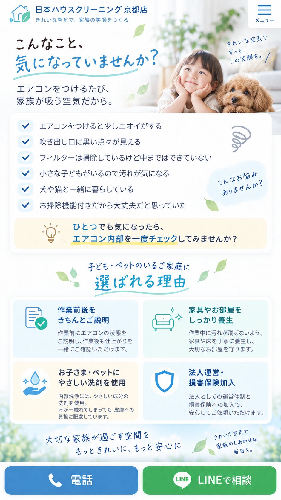
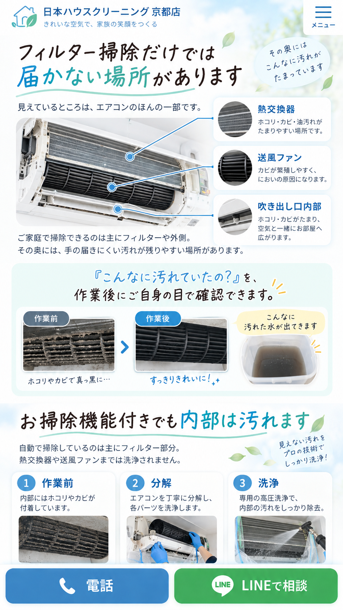
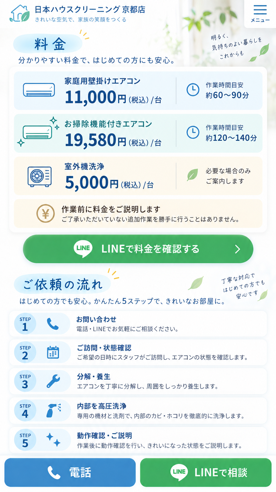
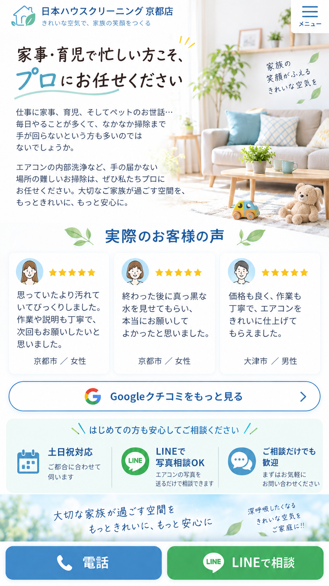
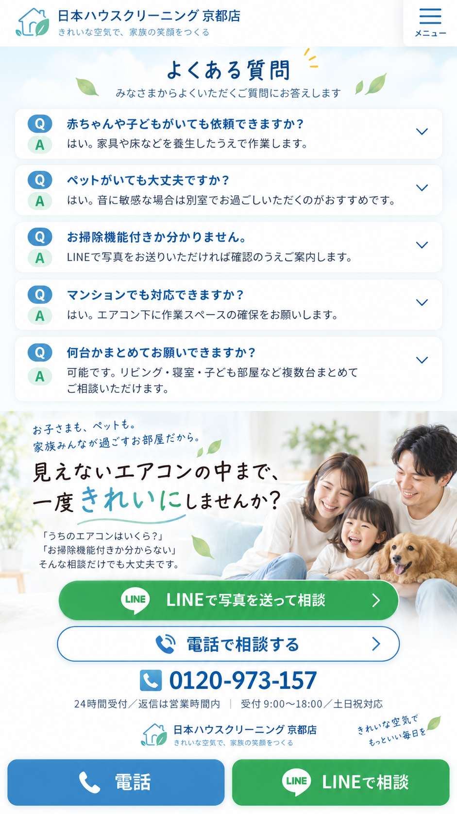

家族が毎日過ごす部屋だから、エアコンの中まで、きれいに。
こんなこと、気になっていませんか？ 子ども・ペットのいるご家庭に選ばれる理由

フィルター掃除だけでは届かない場所があります

料金・ご依頼の流れ

家事・育児で忙しい方こそ、プロにお任せください。実際のお客様の声

よくある質問・お問い合わせ

はい。家具や床などを養生したうえで作業します。
はい。音に敏感な場合は別室でお過ごしいただくのがおすすめです。
LINEで写真をお送りいただければ確認のうえご案内します。
はい。エアコン下に作業スペースの確保をお願いします。
可能です。リビング・寝室・子ども部屋など複数台まとめてご相談いただけます。